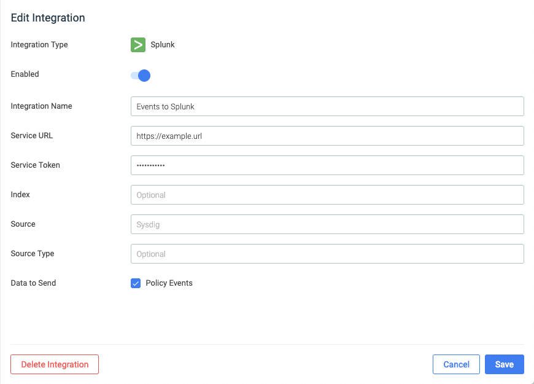

Event Forwarding
Note
This feature is available only through Sysdig Labs, and will need to be enabled by an admin user before it can be configured.
Sysdig Secure data can be forwarded to third party security information and event management (SIEM) tools, allowing users to correlate Sysdig findings with other tools in their environment.
Note
Sysdig currently only supports Splunk for event forwarding.
Contents
Configure an Event Forwarding Integration
To forward event data to Splunk:
From the
Settingsmodule of the Sysdig Secure UI, navigate to theEvents Forwardingtab.Click the
Add Integrationbutton.Select
Splunkfrom the drop-down menu.Toggle the
Enabledswitch as necessary.Note
By default, the new integration is enabled.
Configure the required options:
 Define an integration name.
Define the URL of the Splunk service.
Define the Splunk service token.
Optional: Configure additional Splunk parameters (Index, Source, Source Type) as desired.
Note
For more information on these parameters, refer to the Splunk documentation.
Select the data to send to Splunk.
Note
Currently, Sysdig only supports sending policy events.
Click the
Savebutton to save the integration.
 |
Enable/Disable Integrations
To enable or disable existing integrations:
From the
Settingsmodule of the Sysdig Secure UI, navigate to theEvents Forwardingtab.Toggle the relevant switch/es beside the configured integrations to enable/disable them as necessary.
Delete an Event Forwarding Integration
To delete an existing integration:
From the
Settingsmodule of the Sysdig Secure UI, navigate to theEvents Forwardingtab.Click the
More Options(three dots) icon.Click the
Delete Integrationbutton.Click the
Yes, deletebutton to confirm the change.